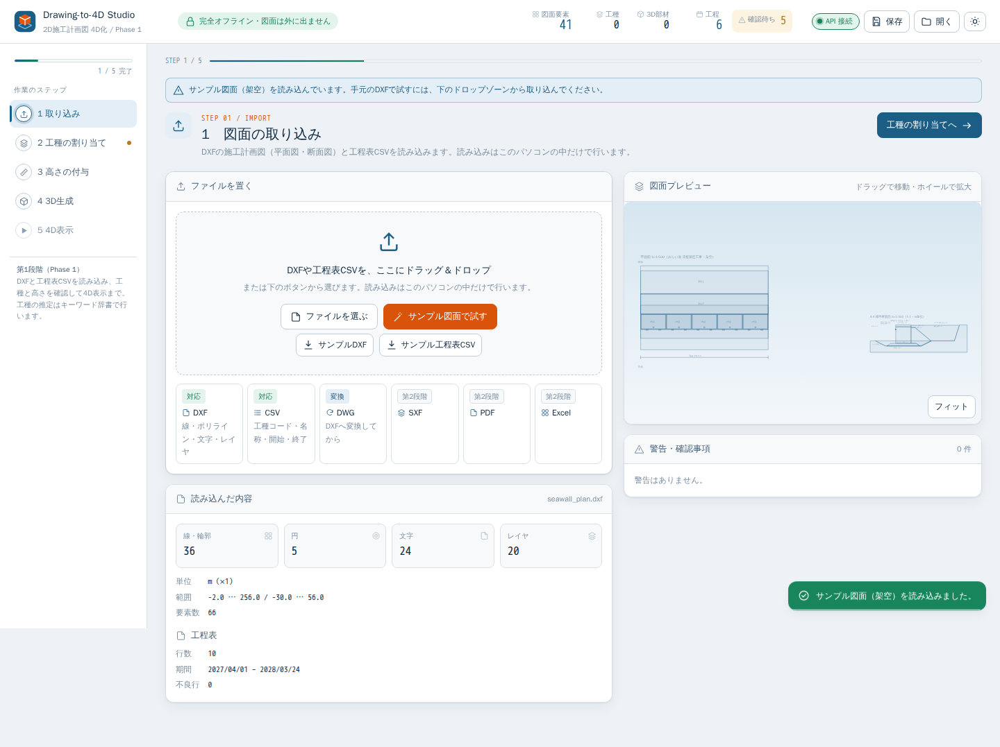
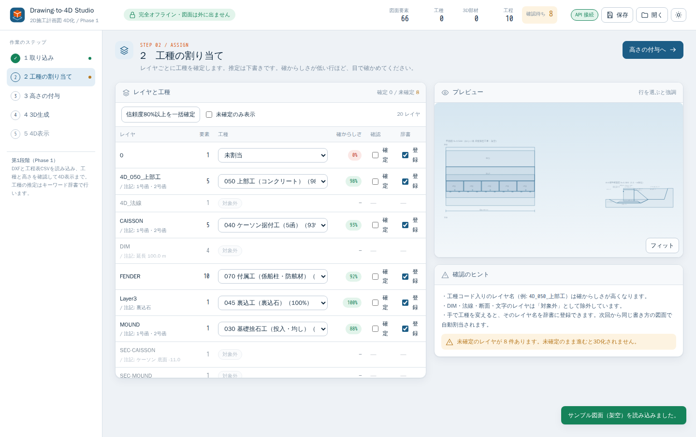
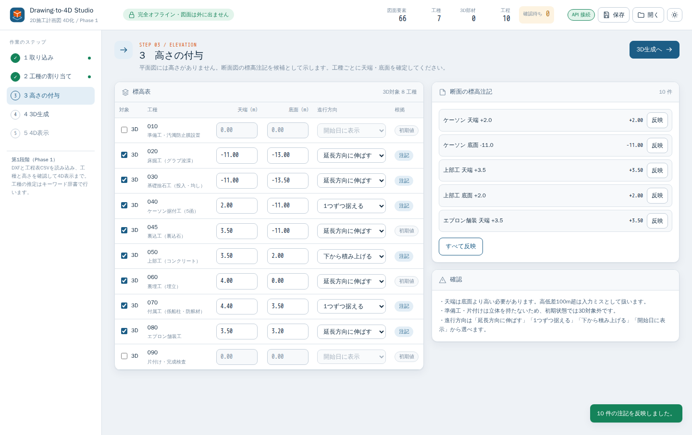
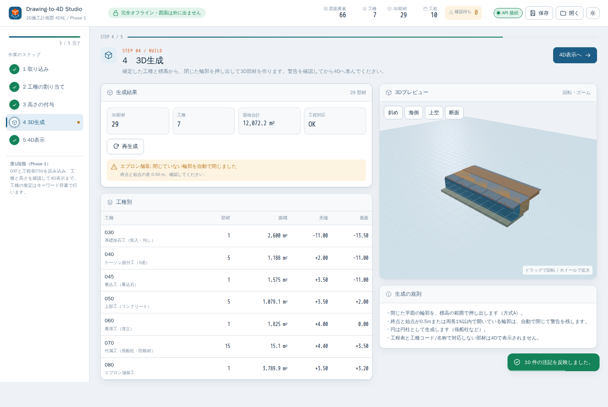
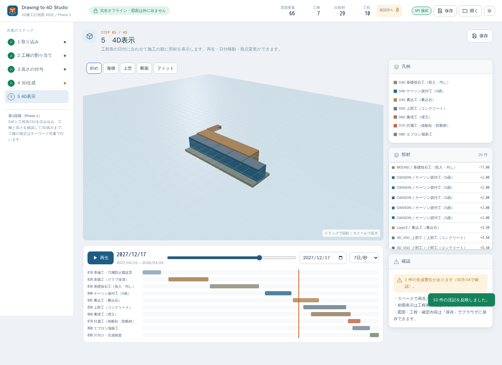
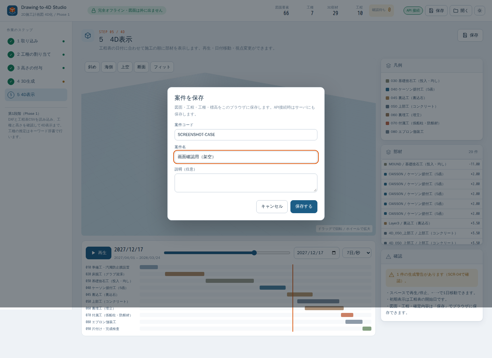

Drawing-to-4D Studio
2Dの施工計画図と工程表から、施工順序が伝わる4Dをつくる
新人研修 ／ 90分（講義60＋演習30） ／ Phase 1（試作版）
01
この研修で持ち帰ること
この60分で、現場で使える最小限を持ち帰ります。
🧭
5ステップの流れ取り込み → 割当 → 高さ → 3D → 4D。迷ったらこの順。
🟢
「確からしさ」の見方緑はまとめてOK。橙・赤は人の目で確認。
🔒
データの扱い図面はブラウザの外に出ない。推定は下書き、確定は人。
※ 数量拾い・干渉チェックには使わない（説明・合意形成のための道具）
02
4Dってなに？
🧊3D形（完成した姿）
＋
📅時間（工程）いつ・どの順番か
＝
🎬4D建つ順番が見える
03
全体像：5つのステップ
- 1
取り込みDXF ＋ 工程表CSV
- 2
工種の割り当てレイヤごとに確認・確定
- 3
高さの付与天端・底面・進行方向
- 4
3D生成押し出して立体に
- 5
4D表示再生・日付・視点
各画面の右上にある青いボタン（次のステップへ →）で進みます。
04
STEP 1 取り込み

- DXF（施工計画図）と 工程表CSV を置く
- 迷ったら 「サンプル図面で試す」（架空の護岸工事）
- 取り込みはブラウザ内。外部に送らない
💡 図面要素・レイヤ・工程の件数が右上に出ます
対応形式：DXF / CSV（SXF・PDF・Excelは第2段階）
05
STEP 2 工種の割り当て

- レイヤごとに「何の工事か」を確認
- 確からしさが目印
- 手で直すと辞書に学習される
80%以上 まとめて確定してOK
50〜79% 目で確認してから確定
50%未満 必ず手で選ぶ
未確定のまま進むと、その行は3D化されません
06
STEP 3 高さの付与

- 断面図の標高注記が候補として並ぶ
- 「すべて反映」で自動入力
- 足りない分だけ手入力
- 進行方向（伸ばす／据える／積む／即時）
⚠️ 天端は底面より高く。100m超の差は入力ミス扱い
07
STEP 4 3D生成

- 閉じた輪郭を押し出して立体に（方式A）
- 円は円柱に（係船柱など）
- 警告は「どのレイヤが、なぜ」まで出る
✅ 警告を確認して問題なければ先へ進めます
08
STEP 5 4D表示

- 再生（スペースキー）で施工順に現れる
- 日付スライダー・←→キーで移動
- 視点：斜め／海側／上空／断面
- ガントの棒をクリックでその日へ
🎨 凡例クリックで工種を強調
09
保存と再開

- 右上の保存 → 案件コードと案件名
- 次回は開くから選ぶ
- ブラウザ保存は約5MBまで
☁️「API 接続」時はサーバにも保存（別端末で開ける）
10
使う場面 / 使わない場面
✅ 使う
- 朝礼・安全朝礼での施工範囲の共有
- 協力会社との順番・重なりの確認
- 若手・新任への全体像の説明
- 発注者への進捗説明
⚠️ 使わない
- 数量の拾い出し（積算の代わり）
- 鉄筋の干渉チェック
- 完成形の最終確認（概略です）
- 実データ・社外秘の取り込み
11
演習の進め方
ここからは手を動かします。1人1台で、サンプル図面を使って最後まで通します。
🎯
ゴール4D再生 → 保存 → 開き直し まで自分でできる
⏱️
時間20分（演習1: 10分 / 演習2: 5分 / 演習3: 5分）
📦
成果物案件コード ENS-イニシャル-01 で保存した案件
つまずいたら手を挙げてください。まずは1人で、最後に隣の人と画面を見せ合いましょう。
12
演習1（10分）サンプルで4Dまで
手順
- 公開URLを開き、社内メールでログイン
- 「✨ サンプル図面で試す」を押す
- STEP2：一括確定 → Layer3 を 045 に
- STEP3：「すべて反映」を押す
- STEP4：「3Dを生成」→ 29部材
- STEP5：再生（スペースキー）
確認ポイント（できたかの目印）
- 未確定が 0 件になっている
- 3D部材が 29 と表示される
- 再生で日付が進み、部材が順に現れる
- 右上の n / 5 完了 が増えていく
13
演習2（5分）工種を直すと学習される
やること
- STEP2で Layer3 の工種を 045 渡土（裏込石） に変える
- STEP1 に戻り、同じDXFをもう一度取り込む
- STEP2 で Layer3 が 100% になっているか見る
なぜそうなる？
手で直すと、そのレイヤ名が辞書に登録されます。次回から同じ書き方の図面では、最初から当たるようになります。
＝ 同じ現場の繰り返しに効く（毎回直さなくてよくなる）
うまく100%にならないときは、レイヤ名が一字一句同じか確認してください。
14
演習3（5分）保存して開き直す
やること
- STEP5 右上の 保存
- 案件コード
ENS-イニシャル-01、案件名は自由
- ブラウザを再読み込み（F5）
- 右上の 開く から選ぶ
確認ポイント
- 4D画面に戻り、部材が29のまま
- 日付が開始日に戻っている
- もう一度再生できる
保存できるのは同じパソコン・同じブラウザです（約5MBまで）。API接続時はサーバにも保存されます。
15
講師用：つまずきと声かけ
| 症状 | 原因 | 声かけ |
|---|
| 次へ進めない | 未確定のレイヤが残っている | 「左の 橙の点 を見て、まとめて確定しましょう」 |
| 3Dが真っ白 | WebGL無効 / リモートデスクトップ | 「ローカルのChromeで開き直してみましょう」 |
| 天端と底面を間違えた | 入力ミス | 「自動で入れ替えて、メッセージが出ます」 |
| 保存できない | 案件コードの形式 | 「英数字・ハイフン・アンダースコアで」 |
| 4Dに部材が出ない | 工程表と工種名が対応していない | 「STEP4の警告を見て、工種名を合わせましょう」 |
時間が余ったら：視点を「断面」に切り替えて、施工順の説明をしてみましょう。
11
まとめ
🌐 https://d4d.mirai-dx-platform.com/
次回の朝礼で、今日作った案件を4Dで見せてみましょう
1 / 12
← → / スペースで進む